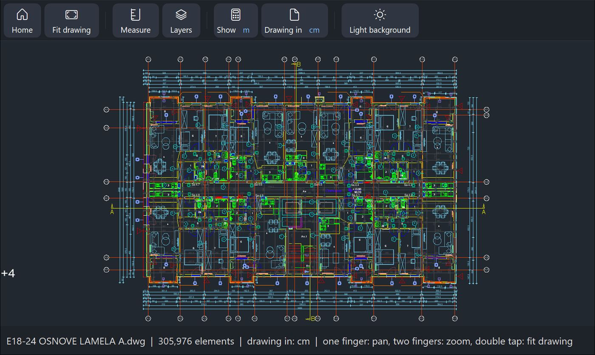
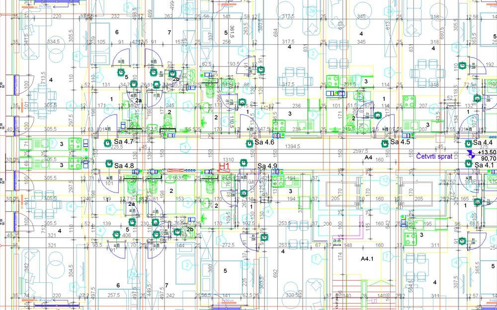
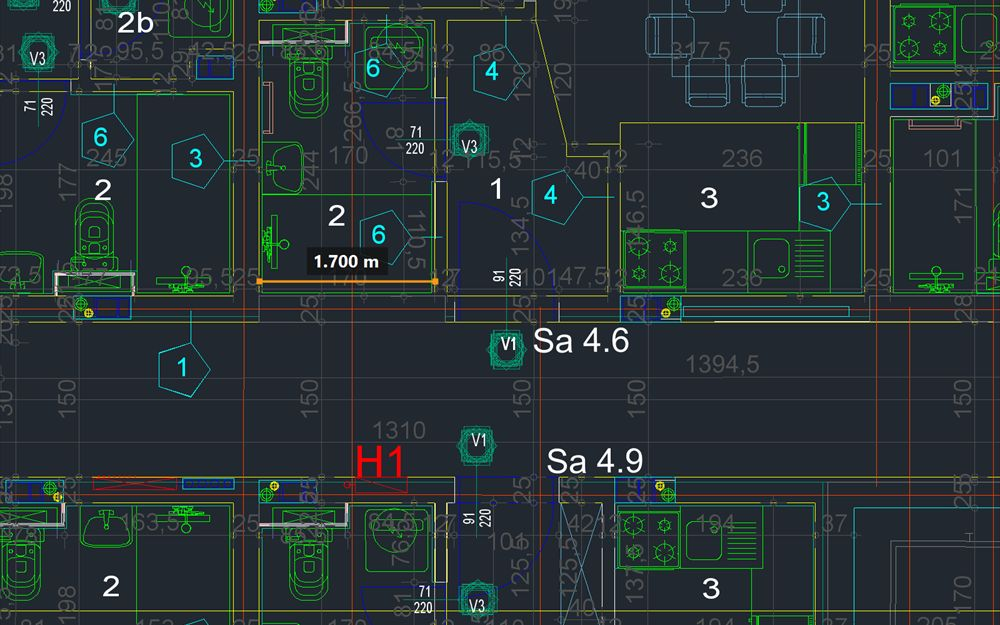
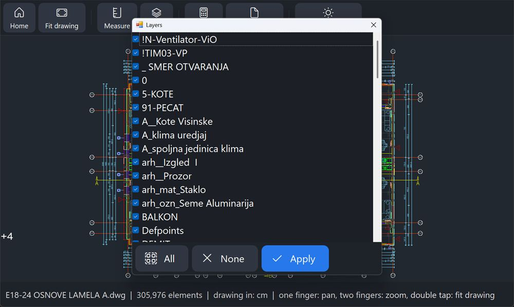

DWG & DXF viewer for Windows tablets
Open big drawings in seconds. Pin your notes right on them.
A 48 MB drawing opens in about 2–3 seconds on a Snapdragon 860 tablet. On site, pin numbered notes with photos to the exact spot and hand over a PDF report – offline, with no account.


*Measured on a Snapdragon 860 tablet with a 48 MB DXF file. Opening time depends on the device and the drawing.
Site notes, pinned to the drawing
Walk the site with the drawing open. Each remark sits exactly where the problem is – no paper, no separate app – and you hand the contractor a PDF with the spot, the text and the photos.
Pin it where the problem is
Tap Notes, then Add note, drag your finger to the spot and release. A numbered pin appears there with its note card. Drag the card wherever it suits you – a line keeps pointing to its spot.
Photos, status, contractor
Add text and as many pictures as you need, from your files or straight from the Windows Camera app. Mark each note open or resolved and enter the contractor it is assigned to. A list shows all notes, with filters by status and contractor.
Hand over a PDF report
A cover page with the whole drawing and all pins, then every note with its spot, text and pictures – for all notes or only the current filter. A single note can be shared, saved as a picture or PDF, or printed.
Notes and pictures are stored only on your device, in Documents\CAD Touch Lite. The drawing file is never changed, nothing is uploaded and there is no account.
Everything you need on site
A focused viewer that does a few things very well – and stays out of your way.
Opens in seconds
A 48 MB drawing with 306,000 elements opens in about 2–3 s on a Snapdragon 860 tablet. Pan and zoom stay smooth at up to 120 fps on 120 Hz screens.
Measure with your finger
The crosshair sits above your fingertip and snaps to line ends and midpoints. mm, cm, m, in or ft.
Layers and background
Hide what you don't need with one tap, and switch to a light or dark background – whatever is easier to read in the sun or in a dim room.
Offline and private
No sign-up, no upload, no tracking. Your drawings, notes and pictures stay on your device.
Native on ARM and x64
Runs natively on Snapdragon tablets with Windows 11 24H2 or newer, and on Intel and AMD laptops and 2-in-1s.
13 languages
English, Srpski, Deutsch, Français, Español, Italiano, Português, Русский, Polski, Türkçe, 简体中文, 日本語, हिन्दी.

Big drawings, still smooth
Every CPU core helps open and draw the plan, so even drawings with hundreds of thousands of elements stay fluid when you pinch and pan.

Check a dimension in seconds
Drag from one point to another and read the distance, ΔX and ΔY. Snapping to line ends and midpoints makes it precise even with a fingertip.

See only what matters
Turn off furniture, dimensions or installations and read the plan the way you need it right now.
Try it on your own drawings
Download CAD Touch Lite from the Microsoft Store: today everything in it is free, including measuring and notes on drawings. Opening and viewing drawings will stay free. Measuring and notes will later become the paid Pro features, sold as a monthly or yearly subscription with a free first month or as a one-time purchase.
Questions
Short answers to the most common ones.
Which files can it open?
DWG (AutoCAD R13 to 2018 and newer formats) and DXF. A DWG is converted once and saved in Documents\CAD Touch Lite, so it reopens in seconds next time.
How fast does it open big drawings?
A 48 MB DXF drawing with 306,000 elements opens in about 2–3 seconds on a Snapdragon 860 tablet, and in about 0.1 seconds when you open it again. Opening time depends on the device and the drawing. A DWG is converted once, the first time you open it.
How do notes on a drawing work?
Tap Notes, then Add note, drag your finger to the spot and release. A numbered pin appears there with a note card for your text, your pictures, a status (open or resolved) and the contractor it is assigned to. A list shows all notes, with filters by status and contractor; tap a row to jump to its pin.
What is in the notes report?
A cover page with the whole drawing and all pins, then every note with its excerpt of the drawing, its text and its pictures. You can save the report as a PDF, print it or share it, for all notes or only for the current filter – for example, one contractor's open notes.
Where are my notes and pictures stored?
Only on your device, in Documents\CAD Touch Lite, where each drawing has its own notes folder. The drawing file is never changed, nothing is uploaded and there is no account. A note leaves your device only when you share, print or save it.
Can I edit drawings?
No. CAD Touch Lite is a viewer: it opens, measures and shows drawings, but it does not change or save them. Notes you pin to a drawing are stored separately on your device; the drawing file itself is never changed.
Is it free?
Today everything is free, including measuring and notes on drawings. Opening and viewing drawings will stay free. Measuring and notes will later become the paid Pro features, sold through the Microsoft Store as a monthly or yearly subscription with a free first month, or as a one-time purchase. A subscription can be cancelled at any time in your Microsoft account.
Does it need an internet connection?
No. Drawings are opened and converted on your device. The app only contacts the Microsoft Store to check its license.
Which devices are supported?
Windows 11 on ARM64 (Snapdragon); Windows 10 (version 1809 or newer) or Windows 11 on x64 (Intel, AMD). It is made for touch, but mouse and keyboard work too.
Is my data collected?
Not by the app: it has no analytics, tracking or advertising, and your drawings never leave your device. This website uses advertising cookies only if you accept them in the cookie notice. See the privacy policy.
How do I uninstall it?
Open Windows Settings → Apps → Installed apps, find CAD Touch Lite and choose Uninstall, or right-click the app in the Start menu and choose Uninstall. Converted drawings and your notes stay in Documents\CAD Touch Lite until you delete them.
Where can I get help or report a problem?
Write on the support page and say what happened and which Windows version you use. The page is public, so please do not post confidential drawings there.